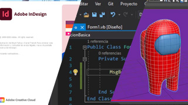
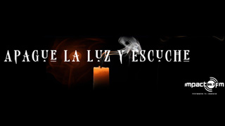

Demo reel
Demo reel
Reels de Universidad Hispana
Un recorrido corto sobre algunas campañas que he producido para la universidad a lo largo de los años.
Trabajo en el cruce entre desarrollo de software, diseño gráfico, videojuegos y docencia. Esta página reúne los proyectos que mejor representan esta fusión.
Demo reel
Un recorrido corto sobre algunas campañas que he producido para la universidad a lo largo de los años.
 Cartel
Cartel
Mi participación en el taller "De lo abstracto a lo figurativo", impartido por Francisco "Paco" Galvez, el objetivo fue llevar una idea dificil de comunicar a algo tangible.

Cursos en líneaMuestra de los cursos grabados como material de apoyo para mis clases, sobre temas de diseño, programación y modelado 3D básico.
Proyectro de videojuego independiente desarrollado en Unity, con plataformas 2D.

Sitio webCapturas de proyectos de software individuales.
0 de 0 agregadasSelección de fotografía personal y profesional.
0 de 0 agregadasIlustración digital y tradicional.
0 de 0 agregadasActividades y evidencias de trabajo en foros, talleres y jornadas.
0 de 0 agregadas